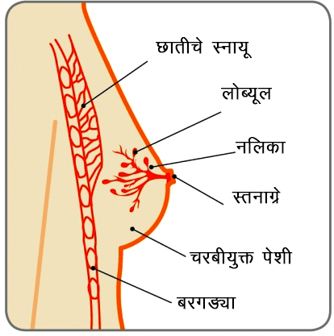

स्तनाग्र

स्तन

स्तनाग्र
क्रिडा क्षेत्रातील एक आख्यायिका बनलेल्या, नऊ वेळा विम्बल्डन सिंगल्स चॅम्पियन जिंकलेल्या मार्टिना नवरातिलोवाला डक्टल कार्सिनोमा इन सिटु (DCIS), स्तनाच्या कर्करोगाच्या प्रारंभिक स्वरूपाचे निदान झाले. 2010 मध्ये ती तेव्हा 53 वर्षांची होती आणि चार वर्षे तिने तिचा वार्षिक स्क्रीनिंग मॅमोग्राम करवून घेतला नव्हता. खरेतर वयाच्या 40 पासून दरवर्षी स्क्रीनिंग मॅमोग्राम करवून घेण्याची शिफारस केली जाते. तिने मान्य केले तिची निरोगी जीवनशैली आणि स्थितीमुळे वार्षिक तपासणीचा विचार करताना तिला तिच्या आरोग्याबाबत आत्मसंतुष्टता वाटत होती.
‘‘मॅमोग्राम करून मला चार वर्षे झाली होती,‘‘ तिने 2010 मध्ये एका मुलाखतीत सांगितले. ‘‘प्रत्येकजण कामात व्यस्त होतो, परंतु कारणे सांगू नका. मी शेपमध्ये राहण्यासाठी व्यायाम करते आणि योग्य आहार घेते आणि तरीही हे माझ्याबाबतीत घडले. आणखी एक वर्षं गेलं असतं तर मी अडचणीत आले असते.‘‘ नशिबाने, कर्करोग प्रारंभिक स्थितीला शोधला गेला. तिचा बराच मोठा स्थानिक भाग कापून काढला गेला (लम्पेक्टोमी) आणि मे 2010 मध्ये तिने रेडिएशन पूर्ण केले.
एक प्रख्यात गायिका आणि नऊ वेळा ग्रॅमी पुरस्कार विजेती शेरील क्रो आणि आणखी एक प्रख्यात हॉलिवूड अभिनेत्री क्रिस्टिना अॅपलगेटला स्क्रीनिंग मॅमोग्राममुळे स्पर्शाला न कळणार्या स्तनाच्या कर्करोगाच्या प्रारंभिक स्थितीचे निदान झाले
DCIS काय आहे़?
स्तन हा वाहिन्या, लोब्यूल्स आणि मेद उतींचा बनलेला असतो. डक्टल कार्सिनोमा इन सिटु (DCIS) हे स्तनाच्या कर्करोगाचे प्रारंभिक स्वरूप आहे ज्यामध्ये कर्करोगाच्या पेशी ह्या वाहिन्यांच्या आत असतात (ज्या स्तनाग्राकडे दूध वाहून नेतात). ही कर्करोगपूर्व स्थिती आहे ज्यामध्ये कर्करोगाच्या पेशींमध्ये दूधाच्या वाहिन्यांबाहेर सभोवतीच्या सामान्य उतींमध्ये पसरण्याची क्षमता विकसीत झालेली नसते
DCIS किती सामान्य आहे?
अमेरिकन कॅन्सर सोसायटीनुसार, दरवर्षी युनायटेड स्टेट्समध्ये DCIS सुमारे 60, 000 केसेसचे निदान होते (दरवर्षी 5 पैकी 1 नवीन केस स्तनाच्या कर्करोगाची असते). भारतामध्ये, इंडियन काउन्सिल ऑफ मेडिकल रिसर्च (ICMR) नुसार दरवर्षी स्तनाच्या कर्करोगाच्या सुमारे 150, 000 नवीन केसेसचे निदान होते. तथापि, DCIS घटनांची कोणतीही विशिष्ट आकडेवारी नाही. जागरुकतेची कमतरता आणि सुसंघटित स्क्रीनिंग प्रोग्रामच्या कमतरतेमुळे, आपल्या देशामध्ये 60% हून जास्त स्तनाचे कर्करोग हे प्रगत स्थितीत असतात, ज्यातील बहुतांश निदानानंतर वर्षभरात बळी पडतात. भारतामध्ये दर दहा मिनिटाला एक स्त्री स्तनाच्या कर्करोगाला बळी पडते/p>
DCIS कसा आढळतो?
DCIS सहसा कोणतेही लक्षण दाखवत नाही. DCIS (80% हून जास्त) चे जास्तीत जास्त निदान हे स्क्रीनिंग मॅमोग्राफीमुळे होते. DCIS हा स्तनाग्रातून निघणार्या रक्तामुळे, स्तनाग्राभोवती पुरळ येण्यामुळे (ज्याला पॅजे आजार म्हणतात) किंवा अगदी दुर्मिळ म्हणजे स्तनातील गाठीमुळे समजतो.
DCIS चे निदान कसे होते?
DCIS चे निदान स्तनाच्या स्क्रीनिंगच्या नेहमीच्या मूल्यांकनातून होते. मूल्यांकनामध्ये तज्ञाद्वारे चिकित्सिय स्तन तपासणी, स्तनाचे इमेजिंग (दोन्ही स्तनांचा मॅमोग्राम आणि अल्ट्रासाउंड) आणि निडल कोअर बायोप्सी (तिहेरी मूल्यमापन) यांचा समावेश होतो.

DCIS मध्ये फार क्वचीत गाठ असते, चिकित्सिय स्तन तपासणी सहसा उपयोगी ठरत नाही. मॅमोग्राम, जे स्तनाच्या स्क्रीनिंगचे गोल्ड स्टँडर्ड आहे, त्यामध्ये सहसा असामान्य दिसणाऱ्या (प्लीओमॉर्फिक) मॅक्रोकॅल्सिफिकेशन्समध्ये कॅल्शियमच्या सूक्ष्म ठिपक्यांचे गुच्छ पांढर्या ठिपक्यांच्या स्वरूपात मॅमोग्राममध्ये दिसतात. तथापि, हे लक्षात ठेवले पाहिजे की सर्व मॅक्रोकॅल्सिफिकेशन्स हे कर्करोगाचे नसतात. DCIS शोधण्यासाठी बहुक्षेत्रीय टीमचे कौशल्य आणि व्यासंग आवश्यक असतो.


शेवटी, निदान करण्यासाठी, लोकल अॅनेस्थिशिया देऊन स्टेरोटॅक्टिक गाईडन्सद्वारे (मॅमोग्रामच्या मदतीने) कोअर नीडल बायोप्सी करून उतीचा एक तुकडा काढला जातो. दुसऱ्या प्रकारची नीडल बायोप्सी आहे, फाईन नीडल अॅस्पिरेशन बायोप्सी (FNAC), जी हाताने चाचपडून तपासलेल्या स्तनाच्या गाठीमध्ये सामान्यपणे वापरली जाते ती दिशाभूल करणारी असू शकते आणि ती DCISS पासून आक्रमक कर्करोग (स्तनाच्या उतींमध्ये पसरलेला कर्करोग) वेगळा ठरवू शकत नाही. नीडल कोअर बायोप्सी ही खूपच अचूक आहे, DCIS चे निदान करण्यासाठी.

काही प्रसंगी, जेव्हा नीडल कोअर बायोप्सी करण्यासाठी मायक्रोकॅल्सिफिकेशन्सचे गुच्छ खूप लहान आणि कमी असतात मायक्रोकॅल्सिफिकेशन्स लोकलाईज करण्यासाठी सूक्ष्म गाईड वायर वापरून जनरल अॅनेस्थेशियामध्ये एक्ससिशन बायोप्सी आवश्यक असू शकते.
DCIS ला कसे ग्रेड केले जाते आणि त्याचे परिणाम काय असतात?
मायक्रोस्कोपखाली पेशींचे स्वरूप कसे दिसते आणि त्या पेशी किती वेगाने विभाजीत होतात त्यानुसार DCIS ला ग्रेड केले जाते. ते हाय, इंटरिमिजएट ग्रेड आणि लो ग्रेड DCIS असू शकते. जर DCIS वर उपचार केले नाहीत तर, कालांतराने कर्करोगाच्या पेशींमध्ये वाहिन्यांमधून आसपासच्या स्तनाच्या उतींमध्ये पसरण्याची क्षमता विकसीत होते. याला आक्रमक स्तनाचा कर्करोग म्हणतात. लो ग्रेड DCIS हाय ग्रेड DCISबनण्याऐवजी आक्रमक स्तनाचा कर्करोग होण्याची शक्यता कमी आहे..
DCIS वर उपचार कसे केले जातात?
आक्रमक स्तनाच्या कर्करोगाच्या विकासाला प्रतिबंध करण्यासाठी स्तनातील सर्व DCIS काढणे हे उपचारांचे ध्येय असते. वाहिन्यांतील DCIS ची व्याप्ती आणि DCIS ची ग्रेड यांसारख्या घटकांवर उपचार अवलंबून असतात.
अ.शस्त्रक्रिया स्तन वाचविण्याची शस्त्रक्रियास्तनाची शस्त्रक्रिया ही DCIS साठी उपचारांचा पहिला भाग आहे. जर DCIS स्थानिक असेल आणि स्तनाच्या एका भागामध्ये मर्यादित असेल तर, स्तन वाचविण्याची शस्त्रक्रिया केली जाऊ शकते. कर्करोग रुग्णाला किंवा डॉक्टरांना कोणालाच जाणवत नसल्यामुळे, लोकल अॅनेस्थेशियाखाली सूक्ष्म गाईड वायर स्तनामध्ये सरकवली जाते जी स्तनाच्या असामान्यता दर्शविते. ही मार्गदर्शकासारखे काम करते आणि नंतर शल्यविशारदाला आसपासच्या सामान्य स्तन उतींसह DCIS चा भाग काढता येतो (गाईड वायर वापरून मोठा स्थानिक भाग काढणे)
स्तन वाचविण्याची शस्त्रक्रिया -
बराच मोठा स्थानिक भाग कापून काढणे


DCIS मुळे जर स्तनाच्या मोठ्या भागावर परिणाम झाला असेल तर मास्टेक्टॉमी ह्या शल्यक्रियात्मक उपचारांची निवड केली जातेय किंवा स्तन वाचविण्याची शस्त्रक्रिया वापरून जर DCIS भोवतीच्या सामान्य उतींचा स्पष्ट भाग मिळवणे शक्य झाले नसेलय किंवा जर स्तनामध्ये DCIS चा एकाहून जास्त भाग असेल (मल्टिफोकल DCIS). जर मास्टेक्टॉमीची शिफारस केली जात असेल तर, स्तन काढण्याशी निगडीत असलेला मानसिक आणि भावनिक धक्का कमी करण्यासाठी रुग्णाला प्राथमिक शस्त्रक्रियेच्याच वेळी स्तनाची त्वरीत पुर्नबांधणी करण्याचा पर्याय दिला जावा. सहसा, बगलेतील लिंफ ग्लँड्स काढाव्या लागत नाहीत कारण वाहिन्यांपासून DCIS स्तनाच्या उतींपर्यंत पसरलेले नसते
स्तन काढणे -
मास्टेक्टॉमी

सौजन्य: ब्रेस्ट कॅन्सर केअर, यूके


शस्त्रक्रियेनंतर पुढील उपचार आवश्यक असतात. याला सहाय्यक उपचार पध्दती म्हणतात आणि यामध्ये रेडिओथेरपी आणि हॉर्मोन थेरपीचा समावेश होतो
रेडिओथेरपीस्तन वाचविण्याची शस्त्रक्रिया पार पाडलेली असेल तर, प्रमाणित सहाय्यक उपचार म्हणजे शस्त्रक्रिया झालेल्या स्तनावर सहा आठवडे एक्सटर्नल बीम रेडिओथेरपी होय. जर रुग्णाची मास्टेक्टॉमी झाली असेल तर, रेडिओथेरपीची आवश्यकता नाही.
हार्मोन थेरपीजर DCIS ची वाढ ही हॉर्मोन इस्ट्रोजेनवर अवलंबून असेल (इस्ट्रोजेन रिसेप्टर पॉझिटिव), तर टॅमोक्सिफेनच्या स्वरूपात हॉर्मोन उपचार पध्दती देऊ केली जाऊ शकते. हे इतर घटकांवरही अवलंबून असेल जसे की DCIS ची ग्रेड.
केमोथेरपीDCIS च्या उपचारांसाठी केमोथेरपी आवश्यक नाही
DCIS जीवघेणा आहे का आणि DCIS चे रोगनिदान काय आहे?
नाही. स्तनातील आसपासच्या सामान्य परिसरामध्ये कर्करोग पसरलेला नसल्यामुळे, DCIS जीवघेणे नाही. DCIS सह स्त्रियांसाठीचा दीर्घकालीन जगण्याचा दर उत्कृष्ठ आहे, जवळ जवळ 100% (98% - 99%) .